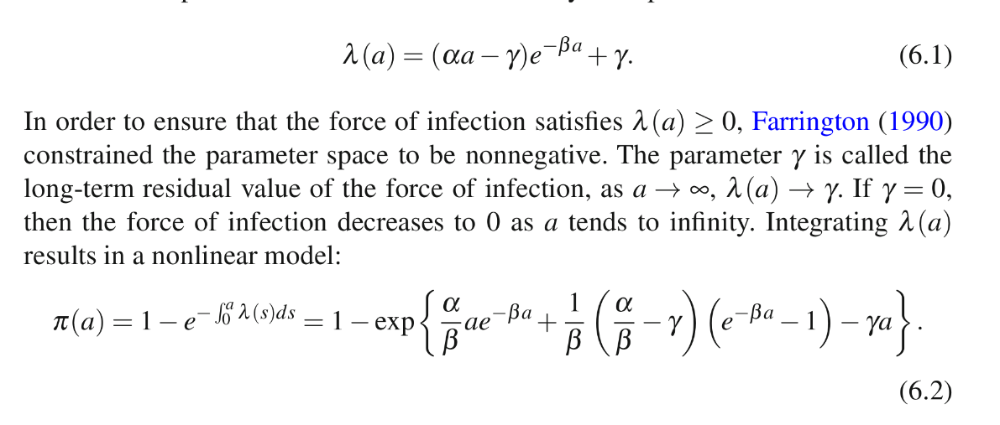

library(testthat)
library(deSolve)
library(serosv)Tổng hợp code Long đã code
Chapter 3.5.1
Code in the book
SIRtwo=function(t,state,parameters)
{
with(as.list(c(state, parameters)),
{
ds1 = -(betatilde11*i1+betatilde12*i2)*s1+mu-mu*s1
di1 = (betatilde11*i1+betatilde12*i2)*s1-nu1*i1-mu*I1
dr1 = nu1*i1 - mu*r1
ds2 = -(betatilde21*i1+betatilde22*i2)*s2+mu-mu*s2
di2 = (betatilde21*i1+betatilde22*i2)*s2-nu2*i2-mu*i2
dr2 = nu2*i2-mu*r2
list(c(ds1,di1,dr1,ds2,di2,dr2))
})
}Long’s function
ds <- function(state, parameters, i)
{
with(as.list(c(state, parameters)), {
sum_beta_i <- 0
for (j in 1:k) {
sum_beta_i <- sum_beta_i + beta[i,j]*get(paste0("i", j))
}
-sum_beta_i*get(paste0("s", i)) + mu - mu*get(paste0("s", i))
})
}
di <- function(state, parameters, i)
{
with(as.list(c(state, parameters)), {
sum_beta_i <- 0
for (j in 1:k) {
sum_beta_i <- sum_beta_i + beta[i,j]*get(paste0("i", j))
}
sum_beta_i*get(paste0("s", i)) - nu[i]*get(paste0("i", i)) - mu*get(paste0("i", i))
})
}
dr <- function(state, parameters, i)
{
with(as.list(c(state, parameters)), {
nu[i]*get(paste0("i", i)) - mu*get(paste0("r", i))
})
}
sir_subpop <- function(t, state, parameters) {
with(as.list(c(state, parameters)), {
s_states <- c()
i_states <- c()
r_states <- c()
for (i in 1:k) {
s_states <- c(s_states, ds(state, parameters, i))
i_states <- c(i_states, di(state, parameters, i))
r_states <- c(r_states, dr(state, parameters, i))
}
list(c(s_states, i_states, r_states))
})
}Run function
k <- 2
state <- c(
s = c(0.8, 0.8),
i = c(0.2, 0.2),
r = c( 0, 0)
)
beta_matrix <- c(
c(0.05, 0.00),
c(0.00, 0.05)
)
parameters <- list(
beta = matrix(beta_matrix, nrow=k, ncol=k, byrow=TRUE),
nu = c(1/30, 1/30),
mu = 0.001,
k = k
)
times<-seq(0,10000,by=0.5)
model <- sir_subpop(times, state, parameters)
sir_subpops_model <- function(times, state, parameters) {
as.data.frame(
ode(y=state,times=times,func=sir_subpop,parms=parameters)
)
}
out <- sir_subpops_model(times, state, parameters)
out[out$time == "10000",] time s1 s2 i1 i2 r1 r2
20001 10000 0.6869925 0.6869925 0.009141676 0.009141676 0.3038659 0.3038659explain function
## sub population = 2 => k =2
i = c(0.2, 0.2)
beta_matrix <- c(
c(0.05, 0.00),
c(0.00, 0.05)
)
beta = matrix(beta_matrix, nrow=2, ncol=2, byrow=TRUE)
beta [,1] [,2]
[1,] 0.05 0.00
[2,] 0.00 0.05beta[1,1][1] 0.05paste0("i", 1)[1] "i1"s_state <- c(ds(state, parameters, 1),ds(state, parameters, 2))
s_state[1] -0.0078 -0.0078test function
test_that("sir_subpops_model returns expected results", {
expected <- list(
time=10000,
s1=0.6869925,
s2=0.6869925,
i1=0.009141676,
i2=0.009141676,
r1=0.3038659,
r2=0.3038659
)
k <- 2
state <- c(
s = c(0.8, 0.8),
i = c(0.2, 0.2),
r = c( 0, 0)
)
beta_matrix <- c(
c(0.05, 0.00),
c(0.00, 0.05)
)
parameters <- list(
beta = matrix(beta_matrix, nrow=k, ncol=k, byrow=TRUE),
nu = c(1/30, 1/30),
mu = 0.001,
k = k
)
times<-seq(0,10000,by=10)
output <- sir_subpops_model(times, state, parameters)
actual <- as.list(tail(output, 1))
expect_equal(actual, expected, tolerance = 0.000001)
})Test passed üéäChapter 6.1.1
Polynomial model
X <- function(t, degree) {
X_matrix <- matrix(rep(1, length(t)), ncol = 1)
if (degree > 1) {
for (i in 2:degree) {
X_matrix <- cbind(X_matrix, i * t^(i-1))
}
}
-X_matrix
}
predictor <- function(degree) {
formula <- "cbind(tot-pos, pos)~-1"
for (i in 1:degree) {
formula <- paste0(formula, "+I(age^", i, ")")
}
formula
}
predictor(1)[1] "cbind(tot-pos, pos)~-1+I(age^1)"## trong sách là cbind(tot-pos, pos)~-1+agepolynomial_model <- function(age, pos, tot, deg=1) {
model <- list()
f <- predictor(deg)
model$info <- glm(
as.formula(f),
family=binomial(link="log")
)
X <- X(age, deg)
model$sp <- 1 - model$info$fitted.values
model$foi <- X%*%model$info$coefficients
model$df <- list(age=age, pos=pos, tot=tot)
class(model) <- "polynomial_model"
model
}
a <- hav_bg_1964
polymodel <- polynomial_model(a$age,a$pos,a$tot, deg = 3)
str(polymodel$info)List of 30
$ coefficients : Named num [1:3] -5.33e-02 5.07e-04 -1.02e-05
..- attr(*, "names")= chr [1:3] "I(age^1)" "I(age^2)" "I(age^3)"
$ residuals : Named num [1:83] -0.1435 -0.1118 -0.0508 -0.1497 -0.4624 ...
..- attr(*, "names")= chr [1:83] "1" "2" "3" "4" ...
$ fitted.values : Named num [1:83] 0.949 0.901 0.856 0.814 0.775 ...
..- attr(*, "names")= chr [1:83] "1" "2" "3" "4" ...
$ effects : Named num [1:83] 19.78 -1.17 1.11 -0.79 -2.62 ...
..- attr(*, "names")= chr [1:83] "I(age^1)" "I(age^2)" "I(age^3)" "" ...
$ R : num [1:3, 1:3] -398 0 0 -12287 6030 ...
..- attr(*, "dimnames")=List of 2
.. ..$ : chr [1:3] "I(age^1)" "I(age^2)" "I(age^3)"
.. ..$ : chr [1:3] "I(age^1)" "I(age^2)" "I(age^3)"
$ rank : int 3
$ qr :List of 5
..$ qr : num [1:83, 1:3] -398.1747 0.0586 0.0735 0.0758 0.0807 ...
.. ..- attr(*, "dimnames")=List of 2
.. .. ..$ : chr [1:83] "1" "2" "3" "4" ...
.. .. ..$ : chr [1:3] "I(age^1)" "I(age^2)" "I(age^3)"
..$ rank : int 3
..$ qraux: num [1:3] 1.04 1.11 1.17
..$ pivot: int [1:3] 1 2 3
..$ tol : num 1e-11
..- attr(*, "class")= chr "qr"
$ family :List of 13
..$ family : chr "binomial"
..$ link : chr "log"
..$ linkfun :function (mu)
..$ linkinv :function (eta)
..$ variance :function (mu)
..$ dev.resids:function (y, mu, wt)
..$ aic :function (y, n, mu, wt, dev)
..$ mu.eta :function (eta)
..$ initialize: language { if (NCOL(y) == 1) { ...
..$ validmu :function (mu)
..$ valideta :function (eta)
..$ simulate :function (object, nsim)
..$ dispersion: num 1
..- attr(*, "class")= chr "family"
$ linear.predictors: Named num [1:83] -0.0528 -0.1046 -0.1555 -0.2056 -0.2549 ...
..- attr(*, "names")= chr [1:83] "1" "2" "3" "4" ...
$ deviance : num 93.8
$ aic : num 220
$ null.deviance : num Inf
$ iter : int 8
$ weights : Named num [1:83] 295.3 136.1 95.1 57 41.3 ...
..- attr(*, "names")= chr [1:83] "1" "2" "3" "4" ...
$ prior.weights : Named num [1:83] 16 15 16 13 12 15 12 11 10 15 ...
..- attr(*, "names")= chr [1:83] "1" "2" "3" "4" ...
$ df.residual : int 80
$ df.null : int 83
$ y : Named num [1:83] 0.812 0.8 0.812 0.692 0.417 ...
..- attr(*, "names")= chr [1:83] "1" "2" "3" "4" ...
$ converged : logi TRUE
$ boundary : logi FALSE
$ model :'data.frame': 83 obs. of 4 variables:
..$ cbind(tot - pos, pos): int [1:83, 1:2] 13 12 13 9 5 11 9 7 3 7 ...
.. ..- attr(*, "dimnames")=List of 2
.. .. ..$ : NULL
.. .. ..$ : chr [1:2] "" "pos"
..$ I(age^1) : 'AsIs' num [1:83] 1 2 3 4 5 6 7 8 9 10 ...
..$ I(age^2) : 'AsIs' num [1:83] 1 4 9 16 25 36 49 64 81 100 ...
..$ I(age^3) : 'AsIs' num [1:83] 1 8 27 64 125 216 343 512 729 1000 ...
..- attr(*, "terms")=Classes 'terms', 'formula' language cbind(tot - pos, pos) ~ -1 + I(age^1) + I(age^2) + I(age^3)
.. .. ..- attr(*, "variables")= language list(cbind(tot - pos, pos), I(age^1), I(age^2), I(age^3))
.. .. ..- attr(*, "factors")= int [1:4, 1:3] 0 1 0 0 0 0 1 0 0 0 ...
.. .. .. ..- attr(*, "dimnames")=List of 2
.. .. .. .. ..$ : chr [1:4] "cbind(tot - pos, pos)" "I(age^1)" "I(age^2)" "I(age^3)"
.. .. .. .. ..$ : chr [1:3] "I(age^1)" "I(age^2)" "I(age^3)"
.. .. ..- attr(*, "term.labels")= chr [1:3] "I(age^1)" "I(age^2)" "I(age^3)"
.. .. ..- attr(*, "order")= int [1:3] 1 1 1
.. .. ..- attr(*, "intercept")= int 0
.. .. ..- attr(*, "response")= int 1
.. .. ..- attr(*, ".Environment")=<environment: 0x5571541f9828>
.. .. ..- attr(*, "predvars")= language list(cbind(tot - pos, pos), I(age^1), I(age^2), I(age^3))
.. .. ..- attr(*, "dataClasses")= Named chr [1:4] "nmatrix.2" "numeric" "numeric" "numeric"
.. .. .. ..- attr(*, "names")= chr [1:4] "cbind(tot - pos, pos)" "I(age^1)" "I(age^2)" "I(age^3)"
$ call : language glm(formula = as.formula(f), family = binomial(link = "log"))
$ formula :Class 'formula' language cbind(tot - pos, pos) ~ -1 + I(age^1) + I(age^2) + I(age^3)
.. ..- attr(*, ".Environment")=<environment: 0x5571541f9828>
$ terms :Classes 'terms', 'formula' language cbind(tot - pos, pos) ~ -1 + I(age^1) + I(age^2) + I(age^3)
.. ..- attr(*, "variables")= language list(cbind(tot - pos, pos), I(age^1), I(age^2), I(age^3))
.. ..- attr(*, "factors")= int [1:4, 1:3] 0 1 0 0 0 0 1 0 0 0 ...
.. .. ..- attr(*, "dimnames")=List of 2
.. .. .. ..$ : chr [1:4] "cbind(tot - pos, pos)" "I(age^1)" "I(age^2)" "I(age^3)"
.. .. .. ..$ : chr [1:3] "I(age^1)" "I(age^2)" "I(age^3)"
.. ..- attr(*, "term.labels")= chr [1:3] "I(age^1)" "I(age^2)" "I(age^3)"
.. ..- attr(*, "order")= int [1:3] 1 1 1
.. ..- attr(*, "intercept")= int 0
.. ..- attr(*, "response")= int 1
.. ..- attr(*, ".Environment")=<environment: 0x5571541f9828>
.. ..- attr(*, "predvars")= language list(cbind(tot - pos, pos), I(age^1), I(age^2), I(age^3))
.. ..- attr(*, "dataClasses")= Named chr [1:4] "nmatrix.2" "numeric" "numeric" "numeric"
.. .. ..- attr(*, "names")= chr [1:4] "cbind(tot - pos, pos)" "I(age^1)" "I(age^2)" "I(age^3)"
$ data :<environment: 0x5571541f9828>
$ offset : NULL
$ control :List of 3
..$ epsilon: num 1e-08
..$ maxit : num 25
..$ trace : logi FALSE
$ method : chr "glm.fit"
$ contrasts : NULL
$ xlevels : Named list()
- attr(*, "class")= chr [1:2] "glm" "lm"fitted value: the fitted mean values, obtained by transforming the linear predictors by the inverse of the link function.
head(polymodel$info$fitted.values) 1 2 3 4 5 6
0.9486049 0.9007083 0.8559922 0.8141713 0.7749889 0.7382143 head(polymodel$sp) 1 2 3 4 5 6
0.05139506 0.09929169 0.14400779 0.18582874 0.22501109 0.26178575 ABOUT OPERATOR
The operator “%*%” is used for matrix multiplication satisfying the condition that the number of columns in the first matrix is equal to the number of rows in second.
m <- matrix(1:8, nrow=2)
n <- matrix(8:15, nrow=4)
m [,1] [,2] [,3] [,4]
[1,] 1 3 5 7
[2,] 2 4 6 8n [,1] [,2]
[1,] 8 12
[2,] 9 13
[3,] 10 14
[4,] 11 15print(m %*% n) [,1] [,2]
[1,] 162 226
[2,] 200 280This is how multiplication takes place:
1*8+3*9+5*10+7*11 = 162 1*12+3*13+5*14+7*15=226
2*8+4*9+6*10+8*11 = 200 2*12+4*13+6*14+8*15=280Estimate force of infection
polymodel$info$coefficients I(age^1) I(age^2) I(age^3)
-5.325918e-02 5.065095e-04 -1.018736e-05 ## X theo Grenfell
head(X(a$age,3)) [,1] [,2] [,3]
[1,] -1 -2 -3
[2,] -1 -4 -12
[3,] -1 -6 -27
[4,] -1 -8 -48
[5,] -1 -10 -75
[6,] -1 -12 -108Calculation of FOI in Long’s code
model$foi <- X%*%model$info$coefficientshead(polymodel$foi) [,1]
[1,] 0.05227672
[2,] 0.05135539
[3,] 0.05049518
[4,] 0.04969609
[5,] 0.04895813
[6,] 0.04828130function to plot polynomial
plot.polynomial_model <- function(x, ...) {
CEX_SCALER <- 4 # arbitrary number for better visual
with(x$df, {
par(las=1,cex.axis=1,cex.lab=1,lwd=2,mgp=c(2, 0.5, 0),mar=c(4,4,4,3))
plot(
age,
pos/tot,
cex=CEX_SCALER*tot/max(tot),
xlab="age", ylab="seroprevalence",
xlim=c(0, max(age)), ylim=c(0,1)
)
lines(age, x$sp, lwd=2)
lines(age, x$foi, lwd=2, lty=2)
axis(side=4, at=round(seq(0.0, max(x$foi), length.out=3), 2))
mtext(side=4, "force of infection", las=3, line=2)
})
}plot.polynomial_model(polymodel)
test polynomial function
library(stats4)
test_that("polynomial_model returns same result as in the book (Muench)", {
expected <- c(-0.0505004)
df <- hav_bg_1964
model <- polynomial_model(
df$age, df$pos, df$tot,
deg=1
)
actual <- unname(c(
coef(model$info)[1]
))
expect_equal(actual, expected, tolerance=0.000001)
})Test passed ü•átest_that("polynomial_model returns same result as in the book (Griffiths)", {
expected <- c(-0.0442615740, -0.0001888796)
df <- hav_bg_1964
model <- polynomial_model(
df$age, df$pos, df$tot,
deg=2
)
actual <- unname(c(
coef(model$info)[1],
coef(model$info)[2]
))
expect_equal(actual, expected, tolerance=0.000001)
})Test passed üòÄtest_that("polynomial_model returns same result as in the book (Grenfell & Anderson)", {
expected <- c(-5.325918e-02, 5.065095e-04, -1.018736e-05)
df <- hav_bg_1964
model <- polynomial_model(
df$age, df$pos, df$tot,
deg=3
)
actual <- unname(c(
coef(model$info)[1],
coef(model$info)[2],
coef(model$info)[3]
))
expect_equal(actual, expected, tolerance=0.000001)
})Test passed üòÄ6.1.2 Nonlinear Models

farrington_model <- function(age, pos, tot, start, fixed=list())
{
farrington <- function(alpha,beta,gamma) {
p=1-exp((alpha/beta)*age*exp(-beta*age)
+(1/beta)*((alpha/beta)-gamma)*(exp(-beta*age)-1)-gamma*age)
ll=pos*log(p)+(tot-pos)*log(1-p)
return(-sum(ll))
}
model <- list()
model$info <- mle(farrington, fixed=fixed, start=start)
alpha <- model$info@coef[1]
beta <- model$info@coef[2]
gamma <- model$info@coef[3]
model$sp <- 1-exp(
(alpha/beta)*age*exp(-beta*age)
+(1/beta)*((alpha/beta)-gamma)*(exp(-beta*age)-1)
-gamma*age)
model$foi <- (alpha*age-gamma)*exp(-beta*age)+gamma
model$df <- list(age=age, pos=pos, tot=tot)
class(model) <- "farrington_model"
model
}df <- rubella_uk_1986_1987
model <- farrington_model(
df$age, df$pos, df$tot,
start=list(alpha=0.07,beta=0.1,gamma=0.03)
)Warning in log(p): NaNs produced
Warning in log(p): NaNs produced
Warning in log(p): NaNs produced
Warning in log(p): NaNs producedVì model ra kết quả như trên nên xử lí bằng suppressWarnings
model <- suppressWarnings(farrington_model(
df$age, df$pos, df$tot,
start=list(alpha=0.07,beta=0.1,gamma=0.03)
))
str(model$info)Formal class 'mle' [package "stats4"] with 10 slots
..@ call : language mle(minuslogl = farrington, start = start, fixed = fixed)
..@ coef : Named num [1:3] 0.0703 0.2024 0.0367
.. ..- attr(*, "names")= chr [1:3] "alpha" "beta" "gamma"
..@ fullcoef : Named num [1:3] 0.0703 0.2024 0.0367
.. ..- attr(*, "names")= chr [1:3] "alpha" "beta" "gamma"
..@ fixed : Named num [1:3] NA NA NA
.. ..- attr(*, "names")= chr [1:3] "alpha" "beta" "gamma"
..@ vcov : num [1:3, 1:3] 2.95e-05 8.80e-05 1.83e-05 8.80e-05 6.81e-04 ...
.. ..- attr(*, "dimnames")=List of 2
.. .. ..$ : chr [1:3] "alpha" "beta" "gamma"
.. .. ..$ : chr [1:3] "alpha" "beta" "gamma"
..@ min : num 1947
..@ details :List of 6
.. ..$ par : Named num [1:3] 0.0703 0.2024 0.0367
.. .. ..- attr(*, "names")= chr [1:3] "alpha" "beta" "gamma"
.. ..$ value : num 1947
.. ..$ counts : Named int [1:2] 110 25
.. .. ..- attr(*, "names")= chr [1:2] "function" "gradient"
.. ..$ convergence: int 0
.. ..$ message : NULL
.. ..$ hessian : num [1:3, 1:3] 261540 -106335 144751 -106335 50086 ...
.. .. ..- attr(*, "dimnames")=List of 2
.. .. .. ..$ : chr [1:3] "alpha" "beta" "gamma"
.. .. .. ..$ : chr [1:3] "alpha" "beta" "gamma"
..@ minuslogl:function (alpha, beta, gamma)
.. ..- attr(*, "srcref")= 'srcref' int [1:8] 3 17 8 3 17 3 3 8
.. .. ..- attr(*, "srcfile")=Classes 'srcfilecopy', 'srcfile' <environment: 0x557152d20518>
..@ nobs : int NA
..@ method : chr "BFGS"test function
test_that("farrington_model returns same result as in the book", {
expected <- c(
alpha=0.07034904,
beta=0.20243950,
gamma=0.03665599
)
df <- rubella_uk_1986_1987
model <- suppressWarnings(farrington_model(
df$age, df$pos, df$tot,
start=list(alpha=0.07,beta=0.1,gamma=0.03)
))
actual <- c(
model$info@coef[1],
model$info@coef[2],
model$info@coef[3]
)
expect_equal(actual, expected, tolerance=0.000001)
})Test passed üòÄWeibull model
weibull_model <- function(t, spos)
{
model <- list()
model$info <- glm(
spos~log(t),
family=binomial(link="cloglog")
)
b0 <- coef(model$info)[1]
b1 <- coef(model$info)[2]
model$foi <- exp(b0)*b1*exp(log(t))^(b1-1)
model$sp <- 1-exp(-exp(b0)*t^b1)
model$df <- data.frame(t=t, spos=spos)
class(model) <- "weibull_model"
model
}apply
df <- hcv_be_2006[order(hcv_be_2006$dur),]
model <- weibull_model(
t=df$dur,
spos=df$seropositive
)
model$info$coefficients(Intercept) log(t)
-0.2759649 0.3807367 test Weibull model
test_that("weibull_model returns same result as in the book", {
expected_coefs <- c(-0.27596492, 0.38073667) # page 97
expected_beta_0_hat <- 0.759
df <- hcv_be_2006[order(hcv_be_2006$dur), ]
model <- weibull_model(
t=df$dur,
spos=df$seropositive
)
actual_coefs <- unname(c(
coef(model$info)[1], # intercept
coef(model$info)[2]
))
actual_beta_0_hat <- exp(unname(coef(model$info)[1]))
expect_equal(actual_coefs, expected_coefs, tolerance=0.000001)
expect_equal(actual_beta_0_hat, expected_beta_0_hat, tolerance=0.001)
})Test passed üò∏6.2 Fractional Polynomial Models
How to use predict function
create dataframe
df <- datasets::cars
head(df) speed dist
1 4 2
2 4 10
3 7 4
4 7 22
5 8 16
6 9 10create a linear model
linear_model <- lm(dist~speed, data = df)
linear_model
Call:
lm(formula = dist ~ speed, data = df)
Coefficients:
(Intercept) speed
-17.579 3.932 apply predict
variable_speed <- data.frame(speed = c(11,11,12,12,12,12,13,13,13,13))
predict(linear_model, newdata = variable_speed) 1 2 3 4 5 6 7 8
25.67740 25.67740 29.60981 29.60981 29.60981 29.60981 33.54222 33.54222
9 10
33.54222 33.54222 predict(linear_model) 1 2 3 4 5 6 7 8
-1.849460 -1.849460 9.947766 9.947766 13.880175 17.812584 21.744993 21.744993
9 10 11 12 13 14 15 16
21.744993 25.677401 25.677401 29.609810 29.609810 29.609810 29.609810 33.542219
17 18 19 20 21 22 23 24
33.542219 33.542219 33.542219 37.474628 37.474628 37.474628 37.474628 41.407036
25 26 27 28 29 30 31 32
41.407036 41.407036 45.339445 45.339445 49.271854 49.271854 49.271854 53.204263
33 34 35 36 37 38 39 40
53.204263 53.204263 53.204263 57.136672 57.136672 57.136672 61.069080 61.069080
41 42 43 44 45 46 47 48
61.069080 61.069080 61.069080 68.933898 72.866307 76.798715 76.798715 76.798715
49 50
76.798715 80.731124 diff(predict(linear_model)) 2 3 4 5 6 7 8 9
0.000000 11.797226 0.000000 3.932409 3.932409 3.932409 0.000000 0.000000
10 11 12 13 14 15 16 17
3.932409 0.000000 3.932409 0.000000 0.000000 0.000000 3.932409 0.000000
18 19 20 21 22 23 24 25
0.000000 0.000000 3.932409 0.000000 0.000000 0.000000 3.932409 0.000000
26 27 28 29 30 31 32 33
0.000000 3.932409 0.000000 3.932409 0.000000 0.000000 3.932409 0.000000
34 35 36 37 38 39 40 41
0.000000 0.000000 3.932409 0.000000 0.000000 3.932409 0.000000 0.000000
42 43 44 45 46 47 48 49
0.000000 0.000000 7.864818 3.932409 3.932409 0.000000 0.000000 0.000000
50
3.932409 sum(diff(predict(linear_model)) < 0) == 0 [1] TRUELong function
is_monotone <- function(model) {
(sum(diff(predict(model))<0)==0)
}formulate <- function(p) {
equation <- "cbind(pos,tot-pos)~"
prev_term <- ""
for (i in 1:length(p)) {
if (i > 1 && p[i] == p[i-1]) {
cur_term <- paste0("I(", prev_term, "*log(age))")
} else if (p[i] == 0) {
cur_term <- "log(age)"
} else {
cur_term <- paste0("I(age^", p[i], ")")
}
equation <- paste0(equation, "+", cur_term)
prev_term <- cur_term
}
equation
}
## power in the book
formulate(c( -2 , -1, - 0.5, 0, 0.5, 1, 2,3))[1] "cbind(pos,tot-pos)~+I(age^-2)+I(age^-1)+I(age^-0.5)+log(age)+I(age^0.5)+I(age^1)+I(age^2)+I(age^3)"Function to find the best power value
find_best_fp_powers <- function(age, pos, tot, p, mc, degree, link="logit"){
glm_best <- NULL
d_best <- NULL
p_best <- NULL
#----
min_p <- 1
max_p <- length(p)
state <- rep(min_p, degree)
i <- degree
#----
get_cur_p <- function(cur_state) {
cur_p <- c()
for (i in 1:degree) {
cur_p <- c(cur_p, p[cur_state[i]])
}
cur_p
}
repeat {
if (
(i < degree && state[i] == max_p)
|| (i == degree && state[i] == max_p+1)
) {
if (i-1 == 0) break
if (state[i-1] < max_p) {
state[i-1] <- state[i-1]+1
for (j in i:degree) state[j] <- state[i-1]
i <- degree
} else {
i <- i-1
next
}
}
#------ iteration implementation -------
p_cur <- get_cur_p(state)
glm_cur <- glm(
as.formula(formulate(p_cur)),
family=binomial(link=link)
)
if (glm_cur$converged == TRUE) {
d_cur <- deviance(glm_cur)
if (is.null(glm_best) || d_cur < d_best) {
if ((mc && is_monotone(glm_cur)) | !mc) {
glm_best <- glm_cur
d_best <- d_cur
p_best <- p_cur
}
}
}
#---------------------------------------
if (sum(state != max_p) == 0) break
state[i] <- state[i]+1
}
return(list(p=p_best, deviance=d_best, model=glm_best))
}df <- hav_be_1993_1994
best_p <- suppressWarnings(find_best_fp_powers(
df$age, df$pos, df$tot,
p=seq(-2,3,0.1), mc=FALSE, degree=2, link="cloglog"
))
best_p$p
[1] 1.5 1.6
$deviance
[1] 81.60333
$model
Call: glm(formula = as.formula(formulate(p_cur)), family = binomial(link = link))
Coefficients:
(Intercept) I(age^1.5) I(age^1.6)
-3.61083 0.12443 -0.07656
Degrees of Freedom: 85 Total (i.e. Null); 83 Residual
Null Deviance: 1320
Residual Deviance: 81.6 AIC: 361.2explain function
# degree = 2
state <- rep(1, 2)
state[1] 1 1p=seq(-2,3,0.1)
#---
"p[cur_state[i]]"[1] "p[cur_state[i]]"state[1][1] 1p[1][1] -2p[state[1]][1] -2p_cur <- c(p[state[1]],p[state[2]])
p_cur[1] -2 -2#---
formulate(p_cur)[1] "cbind(pos,tot-pos)~+I(age^-2)+I(I(age^-2)*log(age))"class(formulate(p_cur))[1] "character"#---
str(best_p$model)List of 30
$ coefficients : Named num [1:3] -3.6108 0.1244 -0.0766
..- attr(*, "names")= chr [1:3] "(Intercept)" "I(age^1.5)" "I(age^1.6)"
$ residuals : Named num [1:86] -1.014 -1.014 -1.015 1.822 0.892 ...
..- attr(*, "names")= chr [1:86] "1" "2" "3" "4" ...
$ fitted.values : Named num [1:86] 0.0272 0.028 0.03 0.0326 0.0355 ...
..- attr(*, "names")= chr [1:86] "1" "2" "3" "4" ...
$ effects : Named num [1:86] -2.62 21.77 15.42 1.62 1.02 ...
..- attr(*, "names")= chr [1:86] "(Intercept)" "I(age^1.5)" "I(age^1.6)" "" ...
$ R : num [1:3, 1:3] -37.5 0 0 -13396.1 5943.1 ...
..- attr(*, "dimnames")=List of 2
.. ..$ : chr [1:3] "(Intercept)" "I(age^1.5)" "I(age^1.6)"
.. ..$ : chr [1:3] "(Intercept)" "I(age^1.5)" "I(age^1.6)"
$ rank : int 3
$ qr :List of 5
..$ qr : num [1:86, 1:3] -37.473 0.0148 0.0113 0.0226 0.0276 ...
.. ..- attr(*, "dimnames")=List of 2
.. .. ..$ : chr [1:86] "1" "2" "3" "4" ...
.. .. ..$ : chr [1:3] "(Intercept)" "I(age^1.5)" "I(age^1.6)"
..$ rank : int 3
..$ qraux: num [1:3] 1.01 1.03 1.06
..$ pivot: int [1:3] 1 2 3
..$ tol : num 1e-11
..- attr(*, "class")= chr "qr"
$ family :List of 13
..$ family : chr "binomial"
..$ link : chr "cloglog"
..$ linkfun :function (mu)
..$ linkinv :function (eta)
..$ variance :function (mu)
..$ dev.resids:function (y, mu, wt)
..$ aic :function (y, n, mu, wt, dev)
..$ mu.eta :function (eta)
..$ initialize: language { if (NCOL(y) == 1) { ...
..$ validmu :function (mu)
..$ valideta :function (eta)
..$ simulate :function (object, nsim)
..$ dispersion: num 1
..- attr(*, "class")= chr "family"
$ linear.predictors: Named num [1:86] -3.59 -3.56 -3.49 -3.41 -3.32 ...
..- attr(*, "names")= chr [1:86] "1" "2" "3" "4" ...
$ deviance : num 81.6
$ aic : num 361
$ null.deviance : num 1320
$ iter : int 4
$ weights : Named num [1:86] 0.109 0.308 0.18 0.716 1.066 ...
..- attr(*, "names")= chr [1:86] "1" "2" "3" "4" ...
$ prior.weights : Named num [1:86] 4 11 6 22 30 56 73 43 39 34 ...
..- attr(*, "names")= chr [1:86] "1" "2" "3" "4" ...
$ df.residual : int 83
$ df.null : int 85
$ y : Named num [1:86] 0 0 0 0.0909 0.0667 ...
..- attr(*, "names")= chr [1:86] "1" "2" "3" "4" ...
$ converged : logi TRUE
$ boundary : logi FALSE
$ model :'data.frame': 86 obs. of 3 variables:
..$ cbind(pos, tot - pos): int [1:86, 1:2] 0 0 0 2 2 1 3 5 2 3 ...
.. ..- attr(*, "dimnames")=List of 2
.. .. ..$ : NULL
.. .. ..$ : chr [1:2] "pos" ""
..$ I(age^1.5) : 'AsIs' num [1:86] 0.353553.... 1 2.828427.... 5.196152.... 8 ...
..$ I(age^1.6) : 'AsIs' num [1:86] 0.329876.... 1 3.031433.... 5.799546.... 9.189586.... ...
..- attr(*, "terms")=Classes 'terms', 'formula' language cbind(pos, tot - pos) ~ +I(age^1.5) + I(age^1.6)
.. .. ..- attr(*, "variables")= language list(cbind(pos, tot - pos), I(age^1.5), I(age^1.6))
.. .. ..- attr(*, "factors")= int [1:3, 1:2] 0 1 0 0 0 1
.. .. .. ..- attr(*, "dimnames")=List of 2
.. .. .. .. ..$ : chr [1:3] "cbind(pos, tot - pos)" "I(age^1.5)" "I(age^1.6)"
.. .. .. .. ..$ : chr [1:2] "I(age^1.5)" "I(age^1.6)"
.. .. ..- attr(*, "term.labels")= chr [1:2] "I(age^1.5)" "I(age^1.6)"
.. .. ..- attr(*, "order")= int [1:2] 1 1
.. .. ..- attr(*, "intercept")= int 1
.. .. ..- attr(*, "response")= int 1
.. .. ..- attr(*, ".Environment")=<environment: 0x557154190d08>
.. .. ..- attr(*, "predvars")= language list(cbind(pos, tot - pos), I(age^1.5), I(age^1.6))
.. .. ..- attr(*, "dataClasses")= Named chr [1:3] "nmatrix.2" "numeric" "numeric"
.. .. .. ..- attr(*, "names")= chr [1:3] "cbind(pos, tot - pos)" "I(age^1.5)" "I(age^1.6)"
$ call : language glm(formula = as.formula(formulate(p_cur)), family = binomial(link = link))
$ formula :Class 'formula' language cbind(pos, tot - pos) ~ +I(age^1.5) + I(age^1.6)
.. ..- attr(*, ".Environment")=<environment: 0x557154190d08>
$ terms :Classes 'terms', 'formula' language cbind(pos, tot - pos) ~ +I(age^1.5) + I(age^1.6)
.. ..- attr(*, "variables")= language list(cbind(pos, tot - pos), I(age^1.5), I(age^1.6))
.. ..- attr(*, "factors")= int [1:3, 1:2] 0 1 0 0 0 1
.. .. ..- attr(*, "dimnames")=List of 2
.. .. .. ..$ : chr [1:3] "cbind(pos, tot - pos)" "I(age^1.5)" "I(age^1.6)"
.. .. .. ..$ : chr [1:2] "I(age^1.5)" "I(age^1.6)"
.. ..- attr(*, "term.labels")= chr [1:2] "I(age^1.5)" "I(age^1.6)"
.. ..- attr(*, "order")= int [1:2] 1 1
.. ..- attr(*, "intercept")= int 1
.. ..- attr(*, "response")= int 1
.. ..- attr(*, ".Environment")=<environment: 0x557154190d08>
.. ..- attr(*, "predvars")= language list(cbind(pos, tot - pos), I(age^1.5), I(age^1.6))
.. ..- attr(*, "dataClasses")= Named chr [1:3] "nmatrix.2" "numeric" "numeric"
.. .. ..- attr(*, "names")= chr [1:3] "cbind(pos, tot - pos)" "I(age^1.5)" "I(age^1.6)"
$ data :<environment: 0x557154190d08>
$ offset : NULL
$ control :List of 3
..$ epsilon: num 1e-08
..$ maxit : num 25
..$ trace : logi FALSE
$ method : chr "glm.fit"
$ contrasts : NULL
$ xlevels : Named list()
- attr(*, "class")= chr [1:2] "glm" "lm"test function
test_that("find_best_fp_powers returns same result as in the book (non-monotone)", {
expected_p <- c(1.9, 2.0)
df <- hav_be_1993_1994
output <- suppressWarnings(find_best_fp_powers(
df$age, df$pos, df$tot,
p=seq(-2,3,0.1), mc=F, degree=2, link="logit"
))
actual_p <- output$p
expect_equal(actual_p, expected_p)
})Test passed üéätest_that("find_best_fp_powers returns same result as in the book (monotone)", {
expected_p <- c(1.0, 1.6)
df <- hav_be_1993_1994
output <- suppressWarnings(find_best_fp_powers(
df$age, df$pos, df$tot,
p=seq(-2,3,0.1), mc=T, degree=2, link="logit"
))
actual_p <- output$p
expect_equal(actual_p, expected_p)
})Test passed üéäfractional polynomial function
## ultis
est_foi <- function(t, sp)
{
dsp <- diff(sp)/diff(t)
foi <- approx(
(t[-1]+t[-length(t)])/2,
dsp,
t[c(-1,-length(t))]
)$y/(1-sp[c(-1,-length(t))])
foi
}
fp_model <- function(age, pos, tot, p, link="logit") {
model <- list()
model$info <- glm(
as.formula(formulate(p)),
family=binomial(link=link)
)
model$sp <- model$info$fitted.values
model$foi <- est_foi(
t=age,
sp=model$info$fitted.values
)
model$df <- list(age=age, pos=pos, tot=tot)
class(model) <- "fp_model"
model
}apply
df <- hav_be_1993_1994
model <- fp_model(
df$age, df$pos, df$tot,
p=c(1.5, 1.6), link="cloglog")
plot(model)test function
test_that("fp_model returns same result as in the book (Hepatitis A (BG))", {
expected_coefs <- c(-1.09473686, 0.02622843, -0.01613128)
expected_D <- 77.748963
df <- hav_bg_1964
model <- fp_model(
df$age, df$pos, df$tot,
p=c(1.9, 2.0), link="logit"
)
actual_coefs <- unname(c(
coef(model$info)[1], # intercept
coef(model$info)[2],
coef(model$info)[3]
))
actual_D <- model$info$deviance
expect_equal(actual_coefs, expected_coefs)
expect_equal(actual_D, expected_D)
})Test passed üòÄ